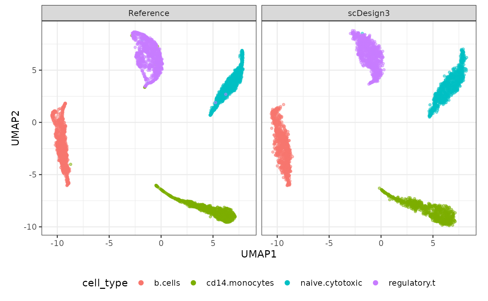
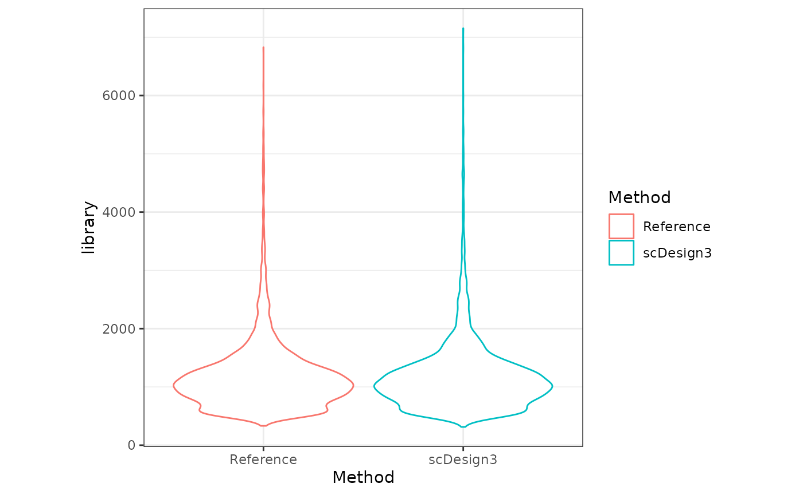

Simulate datasets with cell library size
Dongyuan Song
Bioinformatics IDP, University of California, Los Angelesdongyuansong@ucla.edu
Qingyang Wang
Department of Statistics, University of California, Los Angelesqw802@g.ucla.edu
14 May 2023
Source:../../scDesign3/code/vignettes/scDesign3-librarySize-vignette.Rmd
scDesign3-librarySize-vignette.Rmd
library(scDesign3)
library(SingleCellExperiment)
library(ggplot2)
library(DuoClustering2018)
library(scran)
library(tidyverse)
theme_set(theme_bw())Introduction
In this tutorial, we will show how to use scDesign3 to simulate datasets adjusted by cell library size. The purpose of this tutorial is to show that including the library size when modeling the marginal distribution for each gene can help cells in the synthetic data have more similar library sizes as the cells in the real data.
Read in the reference data
The raw data is from the R package DuoClustering2018 which contain a set of datasets with true cell type labels.
sce <- get("sce_filteredExpr10_Zhengmix4eq")(metadata = FALSE)
colData(sce)$cell_type = as.factor(colData(sce)$phenoid)We then calculate the library size for each cell.
Simulation
Then, we set the mu_formula as cell_type and offsetted by the cell library size to generate new dataset adjusted by library size. The library size is log-transformed because the link function for \(\mu\) of the negative binomial distribution in GAMLSS is \(\log\).
set.seed(123)
example_simu <- scdesign3(
sce = sce,
assay_use = "counts",
celltype = "cell_type",
pseudotime = NULL,
spatial = NULL,
other_covariates = "library",
mu_formula = "cell_type + offset(log(library))",
sigma_formula = "1",
family_use = "nb",
n_cores = 2,
usebam = FALSE,
corr_formula = "1",
copula = "gaussian",
DT = TRUE,
pseudo_obs = FALSE,
return_model = FALSE,
nonzerovar = FALSE
)Then, we can create the SinglecellExperiment object using the synthetic count matrix and store the logcounts to the input and synthetic SinglecellExperiment objects.
Visualization
set.seed(123)
compare_figure <- plot_reduceddim(ref_sce = sce,
sce_list = list(simu_sce),
name_vec = c("Reference", "scDesign3"),
assay_use = "logcounts",
if_plot = TRUE,
color_by = "cell_type",
n_pc = 20)
plot(compare_figure$p_umap)
The violin plot below shows the cells in simulated dataset have similar library size as the cells in the reference dataset.
df1 = colData(sce) %>% as_tibble() %>% select(library) %>% mutate(Method = "Reference")
df2 = colData(simu_sce) %>% as_tibble() %>% select(library) %>% mutate(Method = "scDesign3")
df = rbind(df1,df2)
ggplot(df, aes(x = Method, y = library, color = Method)) +
geom_violin() + theme(aspect.ratio=1)
Session information
sessionInfo()
#> R version 4.2.2 Patched (2022-11-10 r83330)
#> Platform: x86_64-pc-linux-gnu (64-bit)
#> Running under: Ubuntu 20.04.5 LTS
#>
#> Matrix products: default
#> BLAS: /usr/lib/x86_64-linux-gnu/openblas-pthread/libblas.so.3
#> LAPACK: /usr/lib/x86_64-linux-gnu/openblas-pthread/liblapack.so.3
#>
#> locale:
#> [1] LC_CTYPE=en_US.UTF-8 LC_NUMERIC=C
#> [3] LC_TIME=en_US.UTF-8 LC_COLLATE=en_US.UTF-8
#> [5] LC_MONETARY=en_US.UTF-8 LC_MESSAGES=en_US.UTF-8
#> [7] LC_PAPER=en_US.UTF-8 LC_NAME=C
#> [9] LC_ADDRESS=C LC_TELEPHONE=C
#> [11] LC_MEASUREMENT=en_US.UTF-8 LC_IDENTIFICATION=C
#>
#> attached base packages:
#> [1] stats4 stats graphics grDevices utils datasets methods
#> [8] base
#>
#> other attached packages:
#> [1] forcats_0.5.2 stringr_1.5.0
#> [3] dplyr_1.0.10 purrr_1.0.1
#> [5] readr_2.1.3 tidyr_1.2.1
#> [7] tibble_3.1.8 tidyverse_1.3.2
#> [9] scran_1.24.1 scuttle_1.8.3
#> [11] DuoClustering2018_1.14.0 ggplot2_3.4.0
#> [13] SingleCellExperiment_1.20.0 SummarizedExperiment_1.28.0
#> [15] Biobase_2.58.0 GenomicRanges_1.50.2
#> [17] GenomeInfoDb_1.34.6 IRanges_2.32.0
#> [19] S4Vectors_0.36.1 BiocGenerics_0.44.0
#> [21] MatrixGenerics_1.10.0 matrixStats_0.63.0
#> [23] scDesign3_0.99.1 BiocStyle_2.24.0
#>
#> loaded via a namespace (and not attached):
#> [1] readxl_1.4.1 backports_1.4.1
#> [3] AnnotationHub_3.4.0 BiocFileCache_2.6.0
#> [5] systemfonts_1.0.4 plyr_1.8.8
#> [7] igraph_1.3.5 splines_4.2.2
#> [9] gamlss_5.4-10 BiocParallel_1.32.5
#> [11] digest_0.6.31 htmltools_0.5.4
#> [13] viridis_0.6.2 fansi_1.0.3
#> [15] magrittr_2.0.3 memoise_2.0.1
#> [17] ScaledMatrix_1.4.1 googlesheets4_1.0.1
#> [19] cluster_2.1.4 tzdb_0.3.0
#> [21] limma_3.54.0 Biostrings_2.64.1
#> [23] modelr_0.1.10 askpass_1.1
#> [25] timechange_0.2.0 pkgdown_2.0.7
#> [27] colorspace_2.0-3 rvest_1.0.3
#> [29] blob_1.2.3 rappdirs_0.3.3
#> [31] gamlss.data_6.0-2 haven_2.5.1
#> [33] textshaping_0.3.6 xfun_0.36
#> [35] crayon_1.5.2 RCurl_1.98-1.9
#> [37] jsonlite_1.8.4 survival_3.5-5
#> [39] glue_1.6.2 gargle_1.2.1
#> [41] gtable_0.3.1 zlibbioc_1.44.0
#> [43] XVector_0.38.0 DelayedArray_0.24.0
#> [45] BiocSingular_1.12.0 scales_1.2.1
#> [47] mvtnorm_1.1-3 DBI_1.1.3
#> [49] edgeR_3.40.1 ggthemes_4.2.4
#> [51] Rcpp_1.0.9 viridisLite_0.4.1
#> [53] xtable_1.8-4 reticulate_1.27
#> [55] dqrng_0.3.0 bit_4.0.5
#> [57] rsvd_1.0.5 mclust_6.0.0
#> [59] umap_0.2.9.0 metapod_1.4.0
#> [61] httr_1.4.4 ellipsis_0.3.2
#> [63] farver_2.1.1 pkgconfig_2.0.3
#> [65] sass_0.4.4 dbplyr_2.2.1
#> [67] locfit_1.5-9.7 utf8_1.2.2
#> [69] labeling_0.4.2 tidyselect_1.2.0
#> [71] rlang_1.0.6 reshape2_1.4.4
#> [73] later_1.3.0 AnnotationDbi_1.58.0
#> [75] cellranger_1.1.0 munsell_0.5.0
#> [77] BiocVersion_3.15.2 tools_4.2.2
#> [79] cachem_1.0.6 cli_3.6.0
#> [81] generics_0.1.3 RSQLite_2.2.20
#> [83] ExperimentHub_2.4.0 broom_1.0.2
#> [85] evaluate_0.19 fastmap_1.1.0
#> [87] yaml_2.3.6 ragg_1.2.5
#> [89] knitr_1.41 bit64_4.0.5
#> [91] fs_1.5.2 KEGGREST_1.36.3
#> [93] nlme_3.1-162 sparseMatrixStats_1.10.0
#> [95] mime_0.12 xml2_1.3.3
#> [97] compiler_4.2.2 filelock_1.0.2
#> [99] curl_5.0.0 png_0.1-8
#> [101] interactiveDisplayBase_1.34.0 reprex_2.0.2
#> [103] statmod_1.5.0 bslib_0.4.2
#> [105] stringi_1.7.12 highr_0.10
#> [107] RSpectra_0.16-1 desc_1.4.2
#> [109] lattice_0.20-45 bluster_1.6.0
#> [111] Matrix_1.5-1 vctrs_0.5.1
#> [113] pillar_1.8.1 lifecycle_1.0.3
#> [115] BiocManager_1.30.19 jquerylib_0.1.4
#> [117] BiocNeighbors_1.14.0 bitops_1.0-7
#> [119] irlba_2.3.5.1 httpuv_1.6.8
#> [121] R6_2.5.1 bookdown_0.31
#> [123] promises_1.2.0.1 gridExtra_2.3
#> [125] codetools_0.2-19 MASS_7.3-58.2
#> [127] assertthat_0.2.1 openssl_2.0.5
#> [129] rprojroot_2.0.3 withr_2.5.0
#> [131] GenomeInfoDbData_1.2.9 mgcv_1.8-41
#> [133] hms_1.1.2 parallel_4.2.2
#> [135] grid_4.2.2 beachmat_2.14.0
#> [137] rmarkdown_2.19 DelayedMatrixStats_1.20.0
#> [139] googledrive_2.0.0 lubridate_1.9.0
#> [141] shiny_1.7.4 gamlss.dist_6.0-5